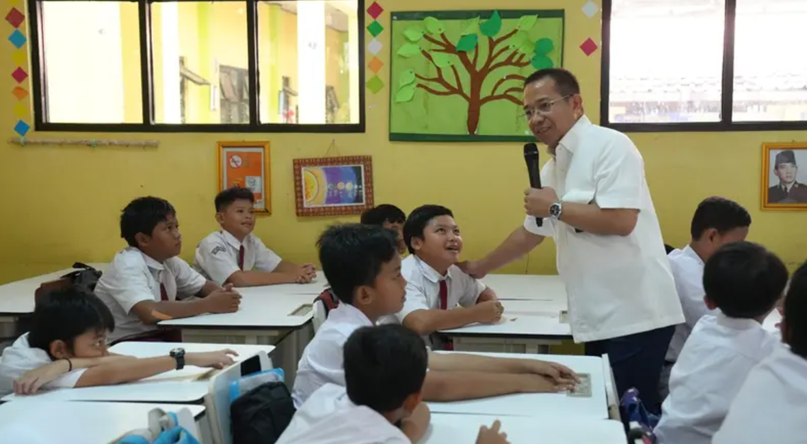
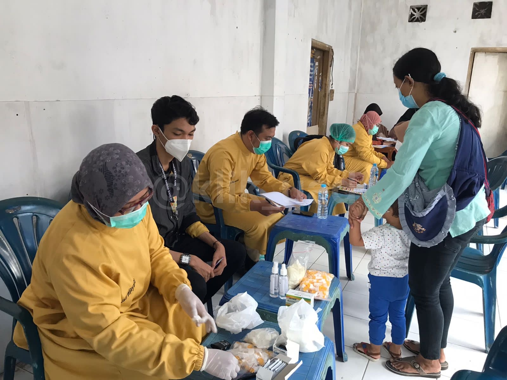
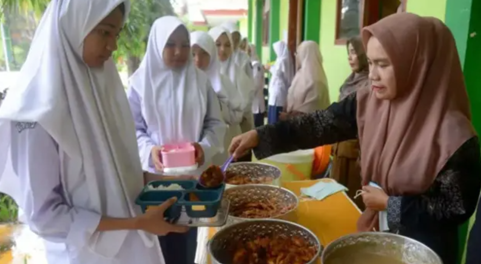

Perubahan iklim dapat menjadi pemicu krisis sosial ekologis yang luas dan intens satu dunia. Kemudian
persoalan ini dapat menjadi semakin kompleks karena krisis yang timbul tidak tersebar merata. “Kita mengenal
Sustainable Development Goals (SDGs) sebagai komitmen global untuk mencapai iklim di bawah dua derajat
Celcius. Indonesia sepakat dengan keputusan iklim global dan juga telah menyampaikan komitmennya dalam
mengendalikan perubahan iklim, yaitu mengurangi emisi Gas Rumah Kaca (GRK) sebagaimana tertera dalam
Nationally Determined Contribution (NDC),” jelas Agus. Novia, seorang Sekretaris Direktorat Jenderal PPI
turut menyampaikan bahwa menurutnya selain terletak di lokasi yang strategis, Indonesia juga memiliki
kekayaan SDA, keanekaragaman hayati, cadangan karbon, serta sumber daya energi dan mineral yang besar. Namun
di sisi lain, sebagai negara kepulauan, Indonesia memiliki kerentanan yang dapat dikatakan cukup tinggi
terhadap bencana alam dan perubahan iklim, yang membuat kita harus lebih berhati-hati.
Salah satu langkah strategis yang dilakukan adalah dengan menggerakkan Program Kampung Iklim (ProKlim) yang
ditargetkan untuk menjangkau 20.000 desa di tahun 2024. Langkah ini dilakukan sebagai upaya pengendalian
perubahan iklim yang dilakukan oleh pemerintah juga komunitas masyarakat sebagai aksi yang nyata. Ketua
Dewan Pertimbangan Pengendalian Perubahan Iklim, Sarwono mengatakan bahwa dunia sedang mengalami mega krisis
dan harus segera ditangani. Sarwono menjelaskan bahwa ketahanan iklim merupakan kondisi masyarakat yang
mampu memenuhi kebutuhan dasarnya sekaligus beradaptasi terhadap perubahan iklim. Beliau juga menekankan
tentang pentingnya akses dan pemenuhan terhadap pangan, energi, dan air di tingkat global.
  
Lebih lanjut Arifin menyatakan, “Kebijakan pengendalian perubahan iklim dan SDGs harus diintegrasikan ke
dalam program perencanaan pembangunan. Salah satu capaian yang dilakukan Indonesia dalam mencapai tujuan
SDGs dan target penurunan emisi GRK adalah dengan mencantumkan target penurunan emisi GRK sebagai salah satu
kerangka ekonomi makro. Artinya, indikator emisi GRK sama dengan indikator pertumbuhan ekonomi. Ditetapkan
juga pembangunan rendah karbon dan ketahanan iklim sebagai bagian dari agenda prioritas nasional dalam
Rencana Pembangunan Jangka Menengah Nasional (RPJMN) 2020-2024."
Indonesia juga telah menciptakan dokumen perencanaan jangka panjang yang memandu kebijakan energi Indonesia
yang sudah diterbitkan sejak 2017 dalam dokumen RUEN (Rencana Umum Energi Nasional). Indonesia juga
memberikan perhatian khusus terhadap energi terbarukan yang bertujuan untuk mencapai tujuan utama
pembangunan berkelanjutan Indonesia. Dilansir dari data yang diperoleh dari dokumen resmi yang diterbitkan
oleh ESDM RI, bahwa Indonesia menargetkan energi terbarukan mencapai 23% pada 2025 dan 31% pada 2050. Salah
satu strategi pemerintah dalam RUEN ini adalah dengan meningkatkan kapasitas produksi energi terbarukan
dengan target untuk PLTA, PLTS, dll khususnya di daerah-daerah yang memiliki paparan sinar matahari tinggi.